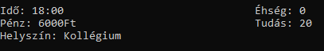
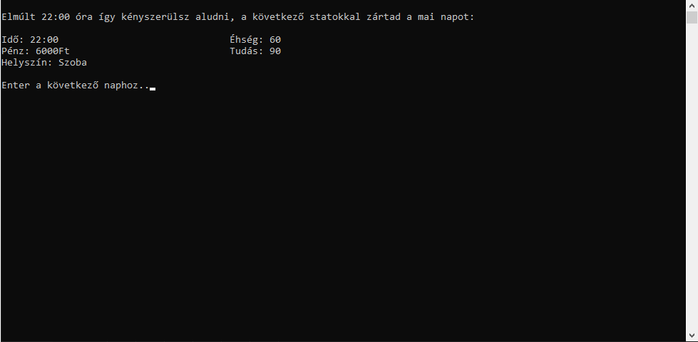
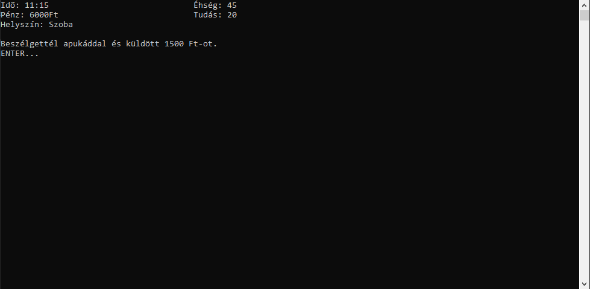

Statisztikák
A játék során számos dologra kell figyelni, ezek a statisztikák. Itt jelenik meg az idő, éhség, pénz, tudás, illetve a helyszín is megjelenik, hogy segítse a tájékozódást.


Idő
Az idő fontos eleme a játéknak. Mivel kollégiumban élsz egy kicsit megkötött az életed ezért fontos, hogy mindig figyeld az órád.
A nap 22:00-kor végződik.
Éhség
Természetesen neked is figyelned kell, hogy ne halj éhen. Ha éhséged a 70-et meghaladja, akkor a játék szól hogy enned kell. Viszont ha 100 fölé megy, véget ér a játék. Ezt a
szobában, a városban délután, valamint 18 és 19 óra között az étkezőben vacsorázhatsz, ami majdnem egész éhséged törli tehát okosan taktikázhatsz.

Pénz
A pénz természetesen fontos mivel ebből tudsz ételt vásárolni magadnak ha nem a kollégiumban eszel. Pénzt tudsz szerezni, vagy akár veszteni a kollégiumon
belül, tehát légy résen!
Tudás
A legfontosabb dolog egy iskolában természetesen a tanulás. Tanulni több helyen tudsz, de a legtöbb helyen más idő alatt más mennyiségű
anyagot tanulsz meg. A tudás meghatározza hogy milyen jegyeket kapsz naponta, minél több, annál jobb jegyet szerezhetsz!